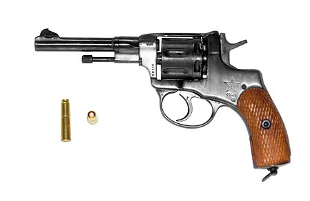

Револьве́р систе́мы Нага́на образца 1895 года (7,62-мм револьвер Нагана обр.
1895 г., или 3-линейный револьвер образца 1895 года, индекс ГРАУ — 56-Н-121) —
семизарядный револьвер, разработанный и производившийся бельгийскими промышленниками
братьями Эмилем (Émile) (1830—1902) и Леоном (Léon) (1833—1900) Наганами (Nagant) для Российской империи,
состоявший на вооружении и выпускавшийся в ряде стран в конце XIX — середине XX века.

История создания
В последней четверти XIX века многие государства задумались о перевооружении своих армий. К тому времени наиболее перспективным образцом личного короткоствольного огнестрельного оружия были револьверы, сочетавшие достаточную простоту конструкции, многозарядность и надёжность. Бельгийский город Льеж был одним из европейских центров оружейной промышленности. В нём с 1859 года существовала Оружейная фабрика Эмиля и Леона Наган (Fabrique d’armes Emile et Léon Nagant) — небольшая семейная мастерская, занимавшаяся ремонтом голландских револьверов и проектирующая свои образцы огнестрельного оружия. Первый револьвер оригинальной конструкции старший брат Эмиль представил на испытания бельгийскому военному ведомству, и он был принят на вооружение в качестве офицерского и унтер-офицерского оружия под названием «револьвер модели 1878 года». 9-мм револьвер модели 1878 года был шестизарядным, он был оснащён «механизмом двойного действия», то есть взведение курка могло осуществляться непосредственно рукой стрелка́ либо автоматически при нажатии на спусковой крючок. Для унтер-офицеров пехоты, кавалерии и вспомогательного состава по заданию руководства бельгийской армии был разработан «9-мм револьвер Наган М/1883» с сознательно ухудшенными боевыми качествами: за счёт введения дополнительной детали была исключена возможность стрельбы «самовзводом», после каждого выстрела приходилось заново взводить курок. Было выпущено ещё несколько модификаций револьвера разных калибров и длин ствола. Вскоре в результате болезни Эмиль Наган почти полностью потерял зрение и основные работы по усовершенствованию конструкции предпринял его младший брат Леон Наган.
Конструкция
Во всех револьверах конструкции Нагана прослеживаются общие основы и признаки:
-
наличие ударно-спускового механизма двойного действия, позволявшего стрелять как
с предварительным взведением курка, так и самовзводом (за исключением «солдатских» и
«унтер-офицерских» дореволюционных моделей, в которых самовзводный механизм блокировался в целях уменьшения расхода боеприпасов)
-
монолитная неразъёмная рамка
-
дверца, открывающая каморы барабана поворотом вбок. Исключение составляет модель 1910, у которой дверца откидывается назад и высвобождает барабан, который откидывается вправо.
-
ствол ввинчен в рамку на глухой посадке
-
шомпол, в боевом положении скрывающийся в оси барабана, а после стрельбы играющий роль экстрактора (выталкивателя) стреляных гильз
-
механизм, находящийся в рамке, закрывается плоской крышкой
Барабан револьвера является одновременно и патронником, и магазином. У наиболее распространённой модели (образца 1895 года) и у большинства её модификаций ёмкость барабана 7 патронов. Полая ось барабана вставляется в рамку спереди и удерживается в ней шомпольной трубкой, установленной перед барабаном на шейке ствола с возможностью поворачиваться на нём как на оси. На моделях с надвиганием барабана на ствол барабан оснащён возвратным механизмом, состоящим из трубки барабана и пружины. На правой стенке рамки размещается стопорное приспособление барабана, роль которого играет подпружиненная дверца. В открытом (откинутом вбок) положении дверца позволяла заряжать и разряжать револьвер, в закрытом закрывала камору, предотвращая выпадение патрона и не давая барабану проворачиваться против часовой стрелки. На барабане выполнены семь гнёзд и выемок для выступа дверцы в открытом и закрытом положении. Механизм револьвера состоит из деталей, выполняющих функции механизма запирания, ударно-спускового механизма и производящих поворот и надвигание барабана на ствол: казённика, ползуна, спускового крючка с собачкой и боевой пружины. Прицельные приспособления состояли из целика с прицельной прорезью на верхней части рамки и мушки на передней части ствола. Всего в конструкции револьвера образца 1895 года 41 деталь.